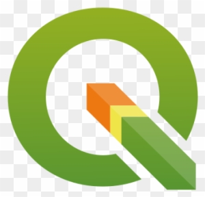

Aşağıdaki tabloda, projelerimde ve stajlarımda aktif olarak kullandığım teknolojiler ve yazılımlar hakkında bilgi bulabilirsiniz.
| Logo | Teknoloji | Açıklama |
|---|---|---|
| Python | Veri analizi, otomasyon ve coğrafi bilgi sistemleri için betik (script) yazma. | |
|  | QGIS | Açık kaynaklı coğrafi bilgi sistemleri yazılımı ile haritalama, mekansal analiz ve veri yönetimi. |
| AutoCAD Civil 3D | Yüzey modelleme, yol tasarımı ve altyapı projeleri için hassas ölçüm ve tasarım uygulamaları. |